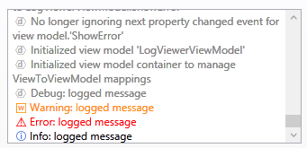

This control is used to display log messages generated from an application in real time. The Control uses it's own LogListener, which is derived from Catel.Logging.LogListenerBase.
Inherits from Catel.Windows.Controls.UserControl.
A RichTextBox is used to display the log messages.

Properties
Filtering
| Property name | Description |
|---|---|
| IgnoreCatelLogging | Gets or sets whether catel logging is turned on. Disabling catel logging improve performance. |
| LogFilter | Gets or sets search term for filtering log records. |
| LogListenerType | Gets or sets log listener type. |
| ShowDebug | Gets or sets whether debug log records are visible. |
| ShowInfo | Gets or sets whether info log records are visible. |
| ShowWarning | Gets or sets whether warning log records are visible. |
| ShowError | Gets or sets whether error log records are visible. |
| SupportCommandManager | Gets or sets whether control supports command manager. This is required to support application-wide commands on the log viewer control, somehow the RichTextBox does not fire KeyDown events for combinations of keys (CTRL + [Key]). |
| TypeFilter | Gets or sets typename for filtering long records. |
Visualisation
| Property name | Description |
|---|---|
| EnableIcons | Gets or sets whether the icon associated with each log record is visible. The icon will change depending on the log level. |
| EnableTimestamp | Gets or sets whether timestamp for each log record is visible. |
| EnableTextColoring | Gets or sets whether colors for each log record depending on its log level is visible. |
| EnableThreadId | Gets or sets whether thread id for each log record is visible. |
Events
| Event name | Description |
|---|---|
| LogEntryDoubleClick | Occurs when user double click on a log record. |
Methods
| Method name | Description |
|---|---|
| Clear | Clear all log entries. |
| CopyToClipboard | Copy log entries to clipboard. |
How to use
<orc:LogViewer LogEntryDoubleClick="LogViewerControlOnLogRecordDoubleClick
LogFilter="{Binding Text, ElementName=FilterTextBox}"
ShowDebug="{Binding IsChecked, ElementName=ShowDebugToggleButton}"
ShowInfo="{Binding IsChecked, ElementName=ShowInfoToggleButton}"
ShowWarning="{Binding IsChecked, ElementName=ShowWarningToggleButton}"
ShowError="{Binding IsChecked, ElementName=ShowErrorToggleButton}"
EnableTimestamp="{Binding IsChecked, ElementName=EnableTimestampCheckBox}"
EnableTextColoring="True"
EnableIcons="True"/>